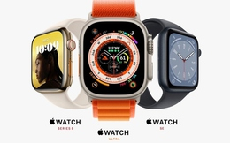

Ra mắt Iphone 14 Series
3 đồng hồ vừa ra mắt của Apple
Tung ra bản cập nhật hệ điều hành iOS 16

iPad Pro 2022 ra mắt
MỚI NHẤT
Apple có thể ra mắt iPad màn hình gập vào năm 2024
Trong báo cáo dự đoán hàng năm mới được công bố ngày 18/10, công ty phân tích CCS Insight cho biết Apple có thể sẽ ra mắt iPad màn hình gập vào năm 2024
Các 'tín đồ' xếp hàng từ 0 giờ để mua iPhone 14
Đúng 0 giờ ngày 14/10, các mẫu máy iPhone 14 được bán tại các đại lý ủy quyền của Apple tại Việt Nam để phục vụ người tiêu dùng. Nhiều tín đồ của 'nhà táo' bất chấp cả đêm muộn chờ tại cửa hàng để được sở hữu được những chiếc iphone 14 sớm nhất.
Tập đoàn Apple lại nhận thêm án phạt tại Brazil
Ngày 13/10, Tòa án bang Sao Paulo, Brazil ra phán quyết xử phạt Tập đoàn công nghệ Apple của Mỹ 100 triệu real (19 triệu USD), đồng thời yêu cầu Apple phải bán mẫu sản phẩm điện thoại thông minh iPhone mới ra mắt đi kèm với bộ sạc pin.

Fast Company bị tấn công mạng, ảnh hưởng đến Apple News
Tạp chí kinh doanh Fast Company của Mỹ tối 27/9 đã đóng cửa trang thông tin điện tử sau khi bị tin tặc tấn công và gửi thông báo có nội dung khiêu dâm và phân biệt chủng tộc tới người dùng Apple thông qua chức năng News của nhà sản xuất iPhones.
Apple bỏ kế hoạch tăng cường sản xuất iPhone 14 do nhu cầu không như kỳ vọng
Với kỳ vọng nhu cầu tăng vọt đối với các mẫu iPhone mới không trở thành hiện thực, “ông lớn” công nghệ Apple được cho là sẽ hủy các kế hoạch gia tăng sản xuất.
iPhone và Macbook sẽ sử dụng dòng chip mới nhất của TSMC
Báo Nikkei Asia ngày 14/9 đưa tin Tập đoàn công nghệ Apple dự kiến sẽ sử dụng dòng chip mới nhất của hãng TSMC của Đài Loan (Trung Quốc) trong sản xuất iPhone và Macbook.